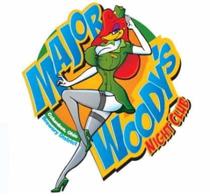
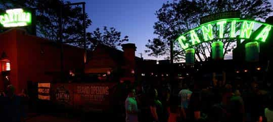

< < < Back
What Happens When Colombia Meets Columbus – Return Of Kings
I moved to Columbus, Ohio in January of 2008. I had just turned 18 and was having a blast in my birth country, Colombia. However I was offered an athletic scholarship, which added to the prospect of being totally independent from my parents, traveling, and meeting new people, especially hot girls (I used to believe all Americans were blonde and hot, boy was I in for a surprise). These were enough reasons to convince me to make the big move.
Up to this point I had been to the States several times. I had seen the ugly side of obesity in the States in every single one of my many trips to Florida, but I also had seen the bright side. I recall banging a very attractive 15 year old blonde in my room at the Disney resort at age 16 as one of my most pleasant experiences while vacationing in Florida. This matched well to the constant bombardment of Hollywood media in Colombian society that made me believe all women in the United States looked like either the Olsen twins or Britney Spears. I was still a young and innocent soul unaware of the magic of makeup, $2000-dollar photo-shoots and Photoshop.
Eventually, I would make my way to Columbus, Ohio. I lived fantastic experiences in it, as well as terrible ones, but mostly I am nothing but grateful with the city. This is my take on what Columbus has to offer:
The Weather
It has a mind of its own, does whatever the fuck it wants and doesn’t care what you think. For a South American man who was used to fantastic Colombian weather, Columbus was hell on earth when I landed at Port Columbus. It was the coldest I had ever been, the trees were death, the sky was grey, and the people were rude. Nonetheless, as time went by I learned about seasons, and how a place that looked completely dead could blossom in only a couple months, I learned to look forward to the spring and summer and to the increased number of young, hot girls, with fewer layers of clothing roaming the streets.
The Partying
Once I had settled I began to experience what Columbus had to offer in terms of partying. I remember the first time partying at the dorms during my first week as a freshman. Someone handed me a Natural Light, a blend of hobo piss and water. I spitted out immediately and demanded a Belgian Stout.
It was then that I learned that most college students have no idea about quality, in general, and that they are as broke as Greece. This was hard for me to handle as I always had my wallet full, nonetheless, I didn’t want to be the idiot who paid for it all. It took me a great deal of self-control not to behave like Michael Jackson at Harrods and spend it all on my new friends. However, having some cash came in handy when I realized how shallow and selfish the standard American college babe is.
Up to then I had never seen the embodiment of the concept of “slut.” I remember vividly the first time I witnessed it at a place called Major Woodies. I walked into a bathroom to a girl giving head to some dude, I shouted, “I’m next!”
Subsequently she proceeded to pull the cock out of her mouth, and shout back, I’M NOT A WHORE! Then resumed her fellatio. Needless to say I laughed like a mad man for the remainder of the night.
This summarizes the type of things I saw at that fantastic bar. There were a lot of underage girls willing to do anything for alcohol, you didn’t need game, you just needed a drink in hand. Major Woodies was Satan’s playground, and God do I miss it.

Inevitably, partying evolved, with law enforcement getting a tight grip in underage alcohol consumption. In present times Columbus has three main ways to party, the first of them being house parties. These are like everywhere else in the states and revolve around the OSU Buckeyes and their endlessness, relentless hate for Michigan, because, well FUCK MICHIGAN that’s why.
There is also The Arena District, which is slut country and where you will find the younger, more attractive and sluttier girls in Columbus. Unfortunately you will also find the bitchiest, most entitled and annoying ones, most of them being bland and uncultured. If you still feel compelled to see this side of town you can try your luck in Sugar Bar, Social, Brothers, Gas Works (where once I got in a fight with a bouncer because some idiot girl fucked up my martini), Cantina and some other nearby watering holes. Columbus pickup scene is really a hit or miss, some nights I would have a blast, some others I would want to burn the place down. However, there is almost always a steady supply of slutty girls, which make it fairly easy to get laid.

Then there is the Short North, it contains the gay district, good restaurants, dive bars and the older range of people. Here you will find more interesting people and it’s a good place to have a nice, relaxed conversation. People here tend to be more interesting but still tasteless. The Short North has a varied offer for food and alcohol, however if you want to try a more Teutonic offer you can pay a visit to the German Village. Its filled with eye pleasant architecture and great places to eat. An important thing to highlight here is that the Short North is fairly cheap, as is Columbus in general.

Nonetheless, Columbus has serious issues with public transportation, other than public buses and cabs you have to rely on cars. Since I wouldn’t be caught dead in a public bus, I relied in cabs and my car for getting around (a car is almost a necessity in Columbus). Cabs in Columbus are cheaper than in DC but more expensive than NYC… mind that fact.
The Low Crime
I often heard comments on how Columbus was a dangerous city. In my head I never quite considered Columbus a city, let alone a dangerous one (anything under 5 million people I don’t consider a city). I was able to walk wherever I wanted at whatever time I wanted and never had any trouble. All dangerous situations I got in were the product of bar fights, never crime.
The People
I had a very close group of people at school, most of them foreign, a fact that quickly made us known around campus as “The Internationals.” It took me some time to recognize the type of people I wanted to be part of my social group, to which not a lot of Americans made it, this due to the lack of culture and taste that most of them displayed.
In my book Columbus has one of the highest ratio of douchebag to nice guy I have ever seen ranking at an impressive 11:1 according to my 2012 calculations. Girls do much better in the equivalent bitch to sweetheart at 4:1, however a lot of the ones without an attitude are also the ugly ones or the fatties, which is unquestionably a problem.
The average Columbus male
People in Columbus have a general ignorance for good taste, elegance, luxury and fashion. Most believe the highest expression of fashion is A&F, Hollister, American Eagle, Kenneth Cole, and Forever 21. They will act like 50 dollars is a huge bar tab and they believe that luxury means bigger, not better.
The Girls
Columbus has a large pool of females to choose from, if you have any resemblance of game you should have no problem getting laid. Depending on the day you may need to lower your standards, if you decide not to, which you should, you will find that keeping your game tight in asshole/alpha mode will get the job done.
Most girls go out wanting to get laid. Their feminist-infested society has pre-programmed them to believe that riding a random dick equals freedom. Take advantage of this beautiful thing. Most of them are incredibly gullible and dumb, and I mean it. Once I had one of them believe that my Brazilian buddy and I were former F1 test drivers starting our careers over at Nascar. Another time I made one believe I was the son of Carlos Slim, and a cheerleader once believed that quiddicth was a real thing in England after my British buddy reassured her it was true in his Queen’s English accent.
I see this city growing in the near future. It has a lot going for it, as big business seems drawn to it. They could really work on their cultural offer as it lacks a great deal. Museums are nearly nonexistent. Shopping and tourist landmarks are limited, too. Also, up to the point to where I left, the city was getting infested by the hipster crowd. In a matter of months they took over the Short North. I managed to have my share of fun with them but it got boring after a while.
This is my take on Columbus, Ohio. A city as confusing as unpredictable, a rollercoaster of emotions that can take you from sheer joy to utter misery in a matter of seconds. I will go back this summer. I hope this information is helpful to you if you ever decide to go.
Read Next: 6 Reasons Why Portland Sucks For Single Men


{kind=link}
{kind=link}